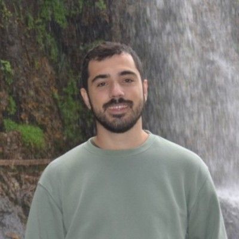

Marine Scientist · Expedition Operations · Blue Biotechnology · Ocean Explorer
Bridging marine science, field expeditions and project delivery

Marine scientist with a passion for ocean exploration and expedition operations. My work bridges scientific research, field logistics and sustainable project delivery across marine biotechnology, biodiversity assessment and ocean conservation.
I specialize in managing complex field operations, coordinating multidisciplinary teams and translating scientific data into actionable outcomes. From offshore expeditions to laboratory research, I bring a hands-on approach to every project.
Learn MoreI am always interested in connecting with researchers, expedition leaders, conservation organizations and blue economy initiatives.
Get In Touch